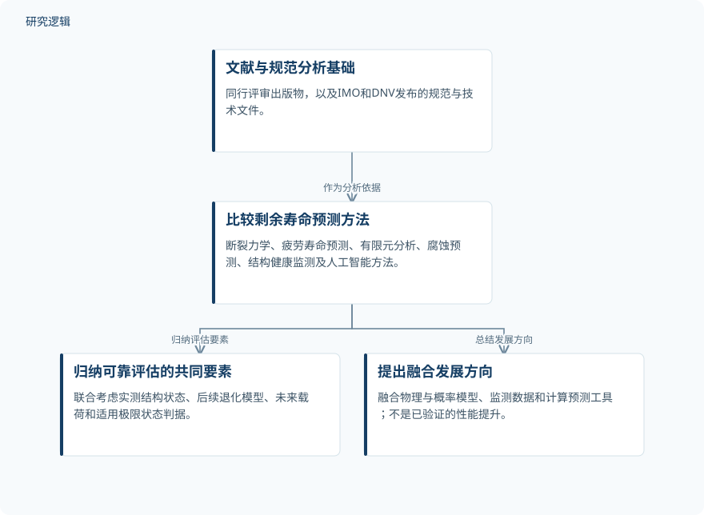

摘要解读
船舶金属结构剩余寿命预测的现代方法
MODERN METHODS FOR PREDICTING THE REMAINING LIFE OF SHIP STRUCTURES
解读更新 2026-11-01 12:05 · 依据公开摘要整理，未核验全文细节
金属船舶结构还能安全服役多久，不能只看疲劳或腐蚀中的单一因素。这篇研究比较多类剩余寿命预测方法，阅读价值在于厘清：可靠评估需要把哪些信息共同纳入判断，而不只是选择一种预测工具。
文章目录
船舶剩余寿命不只是疲劳寿命
研究面向金属船舶结构，将疲劳、裂纹扩展、腐蚀减薄和实际运行条件共同纳入讨论范围。它关注的不只是某种损伤如何发展，而是在这些因素的共同影响下，如何评估结构的剩余寿命。
以文献和规范为基础比较预测方法
摘要明确给出的是文献与规范分析：研究依据包括同行评审出版物，以及国际海事组织（IMO）和挪威船级社（DNV）发布的规范与技术文件。比较对象涵盖断裂力学、疲劳寿命预测、有限元分析、腐蚀预测、结构健康监测和基于人工智能的方法。
因此，这份摘要呈现的是对不同方法的比较性分析，而非一个具体预测模型的训练流程。摘要没有展开各类方法采用什么指标进行比较，也没有提供方法排名。
依据摘要整理的方法比较与结论示意


仅概括摘要明确的分析基础、比较对象与结论关系，不代表论文原图或具体模型实现流程。
下载 SVG图示关系说明
实线表示相邻阶段的信息流，虚线表示跨阶段联系或反馈。
文献与规范分析基础 → 比较剩余寿命预测方法：作为分析依据；比较剩余寿命预测方法 → 归纳可靠评估的共同要素：归纳评估要素；比较剩余寿命预测方法 → 提出融合发展方向：总结发展方向
可靠评估取决于状态、退化、载荷与极限状态
摘要报告的核心结论是：剩余寿命评估的可靠性，取决于对实测结构状态、后续退化模型、未来载荷和适用极限状态判据的共同考虑。这里强调的是这些要素的联合使用，而不是某一种算法本身就足以保证可靠性。
作者将物理模型、概率模型、监测数据与计算预测工具的融合，判断为最有依据的进一步发展方向。这是对方法发展方向的归纳，不能解读为某套融合系统已经获得了量化性能提升。
摘要尚不能说明比较与验证的具体边界
仅据摘要，无法判断所分析研究涉及哪些船型、结构部位、实测样本及运行条件，也无法核对不同方法是否在一致的数据与评价标准下比较。摘要未提供预测误差、可靠性量化结果或独立验证范围；这些信息未在摘要中报告，不等于论文没有讨论。
阅读启发：先问预测依据，再问算法名称
阅读启发：进一步阅读时，可优先追问监测数据如何表征当前状态、未来载荷如何设定，以及极限状态判据如何影响寿命判断。对于人工智能方法，更值得关注它与物理及概率模型如何衔接，而不是仅凭使用了人工智能就推断预测更可靠。
以上为本站阅读启发与建议，不是论文已验证的结论。